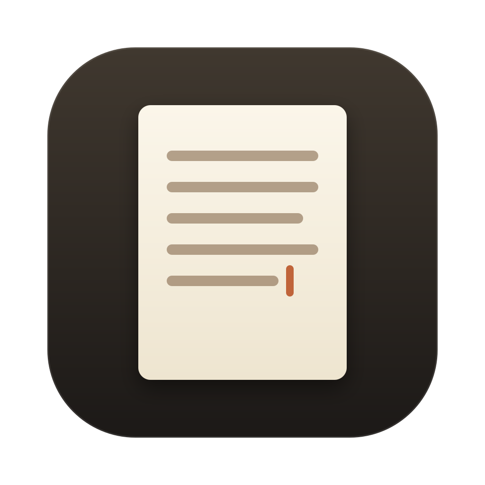

Кабинет
Подключение Яндекс Диска
Проверяем ответ авторизации…
Если приложение не открывается, откройте Кабинет и начните подключение заново. Не отправляйте адрес этой страницы другим людям.

Подключение Яндекс Диска
Проверяем ответ авторизации…
Если приложение не открывается, откройте Кабинет и начните подключение заново. Не отправляйте адрес этой страницы другим людям.